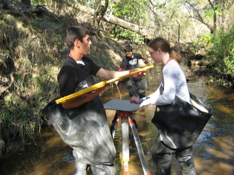
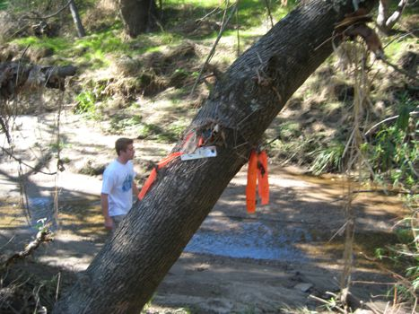
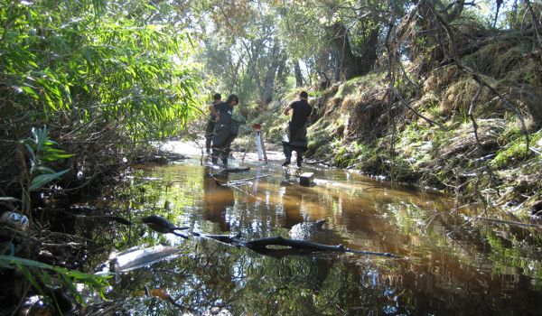

LONG MAPPING
Long Mapping maps the general shape and flow of the creek.
Long Mapping Students
discussing a plan for making a map.

Long Mapping Students
let's go out and map!

Long Mapping Students
measuring the creek
Long Mapping Students
transect marker
Long Mapping Students
at the creek
Creek banks are measured and compared with previous maps to track erosion. This study provides a geographical reference for other studies to pinpoint locations at the creek.
Long Mapping is a vital component of the Arcade Creek Project. The study identifies and regulates the sites studied, making data collected by all students comparable from year to year. Long Mappers spend more time at the creek than most studies and are responsible for warning everyone about potential danger at the creek. Once the sites and transects have been marked and inspected, Long Mappers map the creek's lower and upper banks. After all the sites have been mapped, the study comes together to share the findings. By comparing current maps to maps from previous years, erosion and soil deposition patterns can be recorded.
STUDY FILES:
Long Mapping ProtocolLong Mapping Inventory
Long Mapping Data Form
{kind=link}